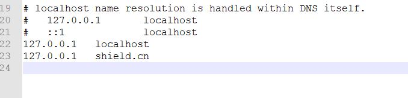

BurpSuite 无法抓取本地DVWA数据包的解决方案
在本地（localhost）使用phpStudy搭建了一个 DVWA 测试环境，但是某些场景需要得知 POST 表单中的数据，于是打开 BurpSuite，但是发现 BP 是无法拦截到本地的包的，那怎么办呢？
问题提出
BurpSuite 无法拦截目标为 127.0.0.1 的数据包。
软件版本：
- Chrome：75.0.3770.100
- BurpSuite：1.7.37
网络解决方案（本文测试，全军覆没）
关闭 Chrome 的代理自动更改插件，并设置 LAN 里的代理地址，清除”高级”选项里的
local值参考地址：
https://blog.csdn.net/FunkyPants/article/details/78143171使用 Firefox 并设置手动配置代理，在不使用代理框里留空
参考地址：
https://blog.51cto.com/antivirusjo/2059299
最终可行方案
修改 hosts 文件，增加一个域名解析，域名随意：

BurpSuite 照常配置，Chrome 照常配置（使用代理插件也可以）
使用域名
shield.cn访问 DVWA，成功拦截